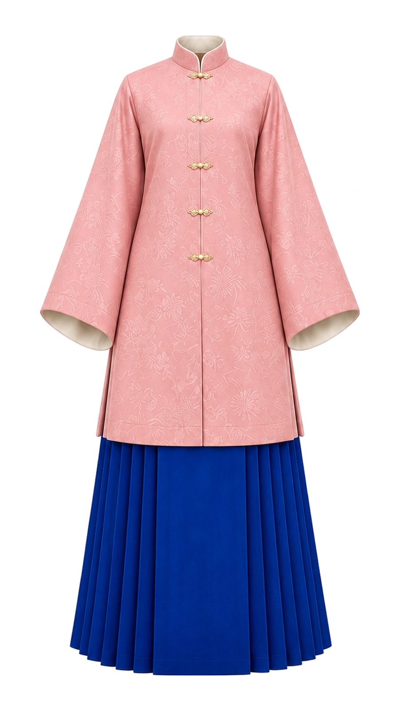

AN ANCIENT REFERENCE LIBRARY把人物的形
把人物的形
与衣，慢慢收集。
姿势、衣装与发饰，彼此独立，也能自由组合。
从一张参考图开始，创造属于你的古代人物。
01 — 03姿势 / 服装 / 发型头饰


以形为引 以衣为序
形参考
图鉴
图鉴
THE COLLECTION / 01一幅一式，
一幅一式，
皆可成章。
为创作者准备的多视角参考素材。挑选姿态，再为人物搭配衣装与发饰。所有图片均为 AI 原创设计，时代形制尚待考证。
—姿势
—服装
—发型头饰
BROWSE THE LIBRARY
参考图鉴 REFERENCE
点击缩略图切换视角，点击大图查看详情
正在加载图鉴…单图预览 / 四个视角
THE COMPOSITION / 02从参考，
从参考，
到人物。
从图鉴中各选择一项，组成你的参考方案。
复制提示词，并将所选图片上传至支持参考图的生图工具。
组合提示词
请按提示顺序手动上传相应视角图片；此页面不调用生图服务。
A NOTE ON THE LIBRARY / 03
关于这套图鉴
这是一套独立制作的古代人物参考库。每组图由 AI 生成后裁切成四张，视角之间可能存在细节偏差；图片与朝代标签均需复核，不代表严格历史复原。
灵感来自 Shisei 姿勢 ↗ 的素材目录与审核方式。本库图片及目录独立制作。